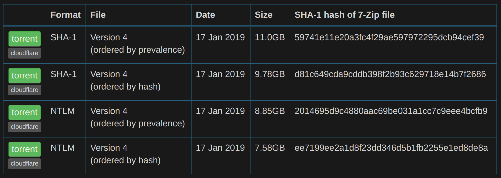

HaveIBeenPwned by Troy Hunt has been a great asset since its inception for many. With the possibility of the service being sold, now is the time to get a copy of the hashes before its too late!
Start by going to https://haveibeenpwned.com/Passwords and scroll to the bottom of the page to see the torrent files. I will be using the SHA1 list (either SHA1 or NTLM will give the same results).
Next, I extracted the contents of the zip (31 GB!); 7-Zip will do just fine.
I created a small script in Python to run through the file initially. In summary, the script will ask for the location of the extracted file and for a password to search. It will turn the password into a hash and run a search, notifying you whether a match was found or not.
Revisions to the file will be made (add retry function, demo how to import hashes into a database for faster searching, etc).